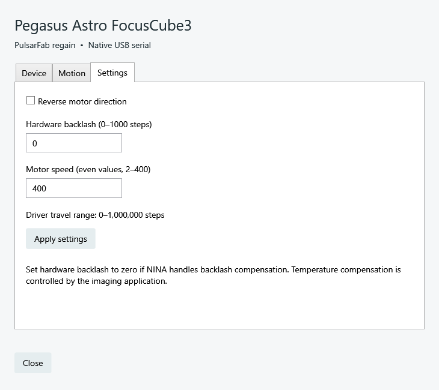

regain documentation
Connect in NINA
Install from the shared plugin registry and select a native regain device in the equipment chooser.
Add the plugin source
https://nina-plugins.pulsarfab.com/https://nina-plugins.psf-guard.com/ serves the same registry. Use either address; there is no need to add both.
- Open NINA’s plugin repository settings and add the source URL.
- Refresh available plugins, install PulsarFab regain, and restart NINA. Existing ZWOgain installations update through the same plugin entry.
- Choose the regain device in the relevant equipment list and open its setup gear.
- Refresh devices, select the intended serial, configure settings, and close setup before connecting in NINA.
Equipment entries
- PulsarFab regain Retryable Camera
- PulsarFab regain CAA Rotator
- PulsarFab regain EFW Filter Wheel
- PulsarFab regain EAF Focuser
- PulsarFab regain Pegasus FocusCube3
For the OFP2 flat panel, use Alpaca discovery. It does not have a native regain NINA provider.
Set up your camera
Start with the default ZWO SDK backend. Pick the camera and save its serial when multiple cameras share a model. Main and guide cameras are separate USB devices. Disconnect other camera applications first.
Set retries and cooler recovery in the setup dialog. Recoverable failures are logged while NINA waits; exhausted recovery returns an error. See camera recovery behavior before increasing replacement-exposure limits.
Focus and filters
EFW filter names and focus offsets are configured in setup; NINA keeps its per-filter exposure and autofocus settings. Set hardware backlash to zero if NINA handles backlash compensation. Temperature compensation remains the imaging application’s responsibility.
{kind=link}

Share FocusCube3 with another ASCOM client
Select the regain ASCOM focuser in NINA instead of the native plugin provider. All ASCOM clients share the same position and serial connection. The native plugin cannot connect alongside the ASCOM server. See port ownership.